La participación de Verónica Artés en el equipo de maquillaje y peluquería de Got Talent España, emitido en Telecinco, marcó uno de los momentos más especiales de su trayectoria profesional. Vivir la televisión desde dentro, en pleno corazón de Mediaset España, fue una experiencia tan intensa como enriquecedora.
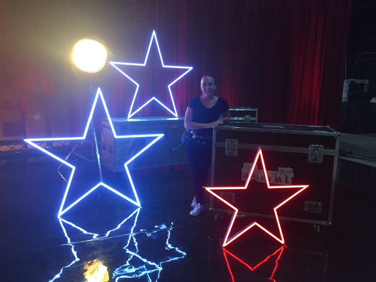
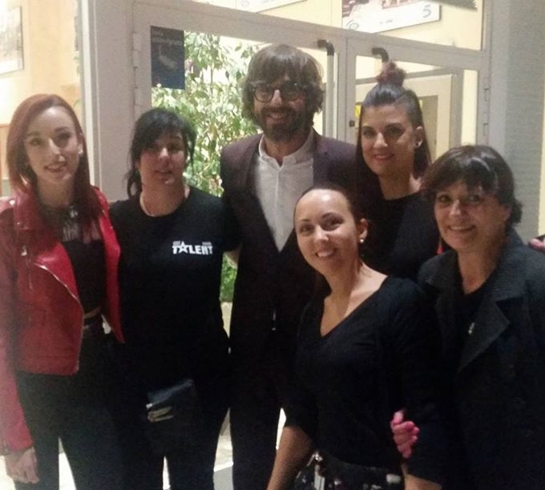
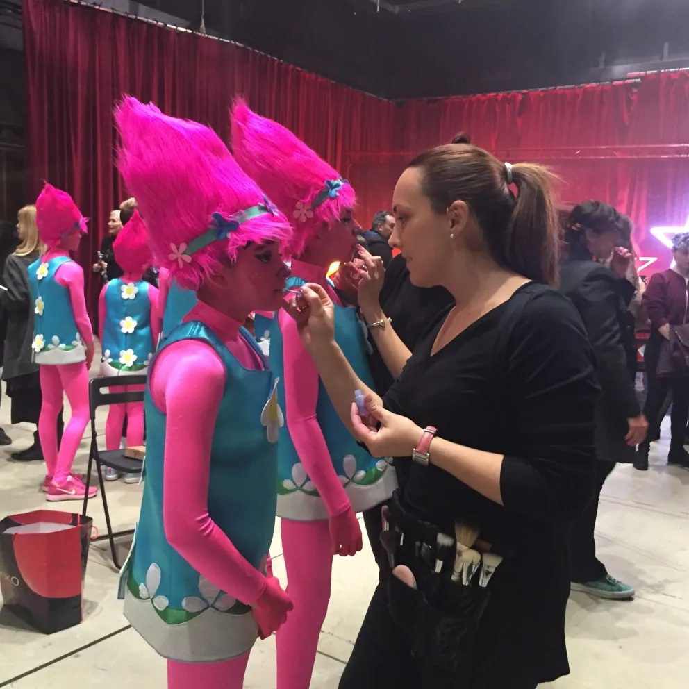
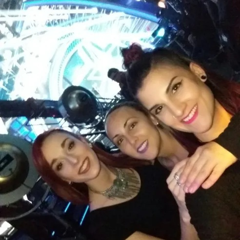
Acceder a los pasillos que millones de personas ven desde casa, cruzarse con presentadores y jurados como Jesús Vázquez, Risto Mejide, Edurne, Eva Hache, Jorge Javier Vázquez o Santi Millán, y convivir con los artistas que dan vida al programa, convirtió cada día de trabajo en una aventura inolvidable.
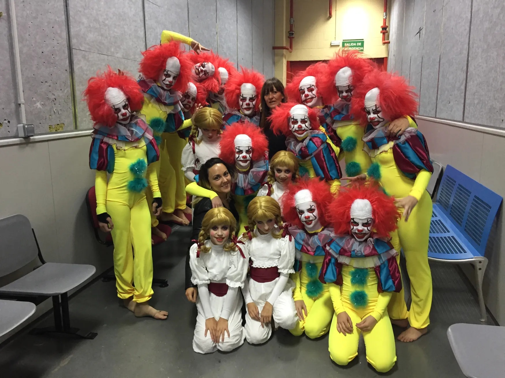
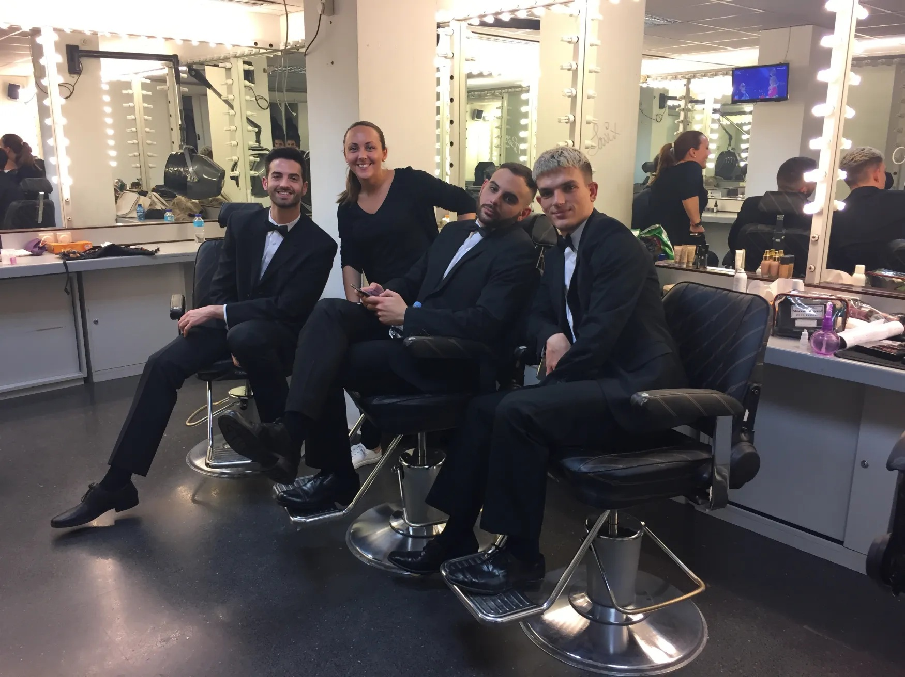
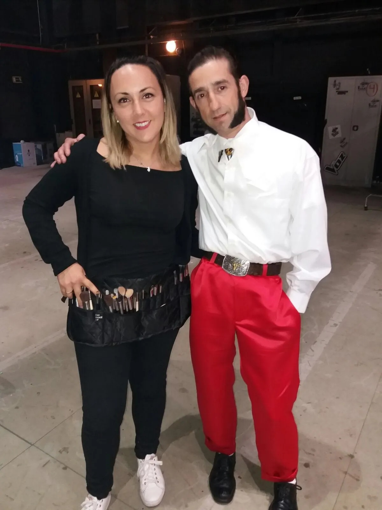
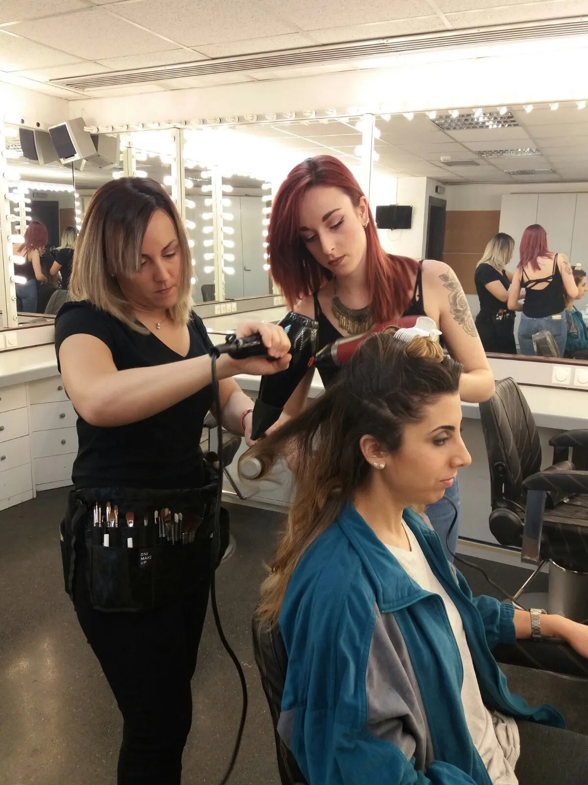
Verónica tuvo la oportunidad de maquillar a numerosos participantes, entre ellos PROGENYX, Madrid Frao, Marina Marlo, Acheron de la Croix, Abdel Luna, Kader y al ganador de la edición, El Tequila. El ritmo era frenético: carreras por los pasillos para retocar antes del directo, idas y venidas a la sala 11 —donde los concursantes ensayaban— y la emoción de llegar a tiempo para ver alguna actuación desde el plató.
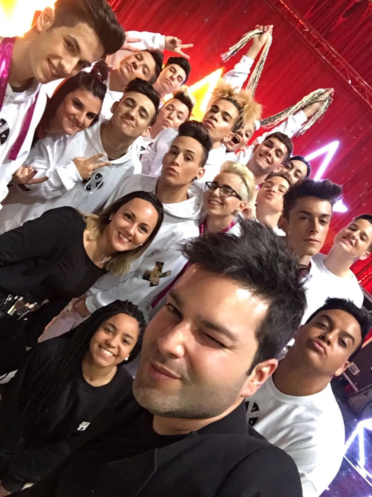
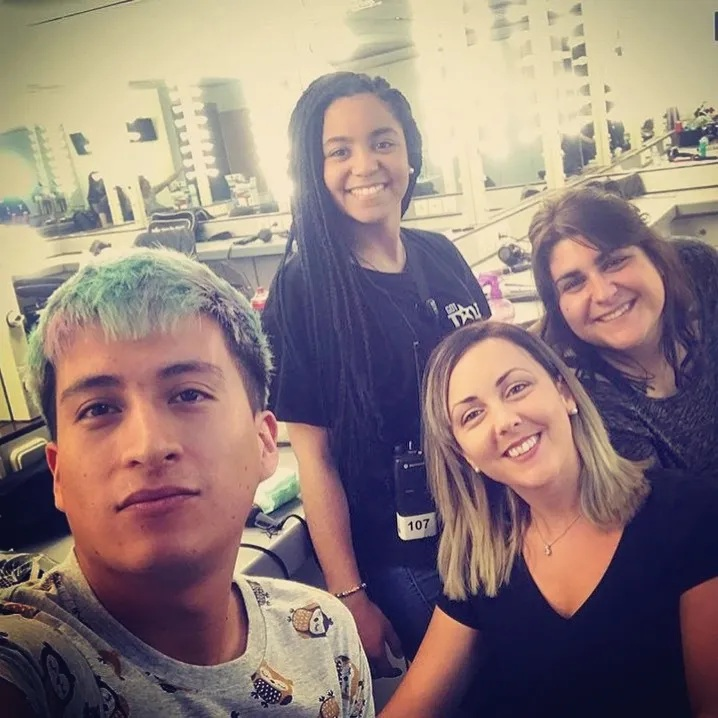
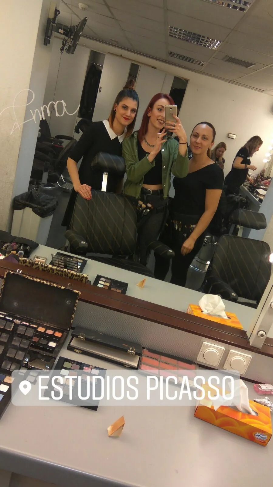
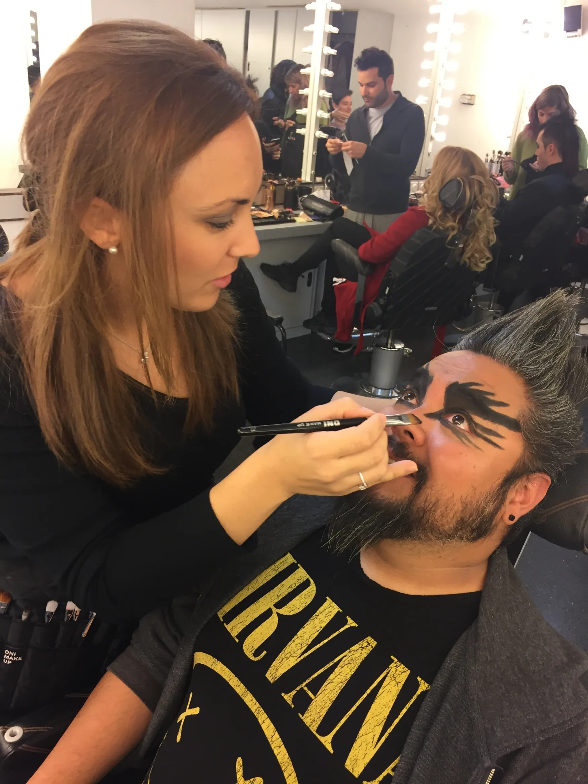
El ambiente profesional fue excepcional. Verónica pudo aprender de redactores, productores y, sobre todo, del equipo de maquillaje y peluquería del programa, quienes compartieron técnicas, consejos y productos que ampliaron aún más su formación.
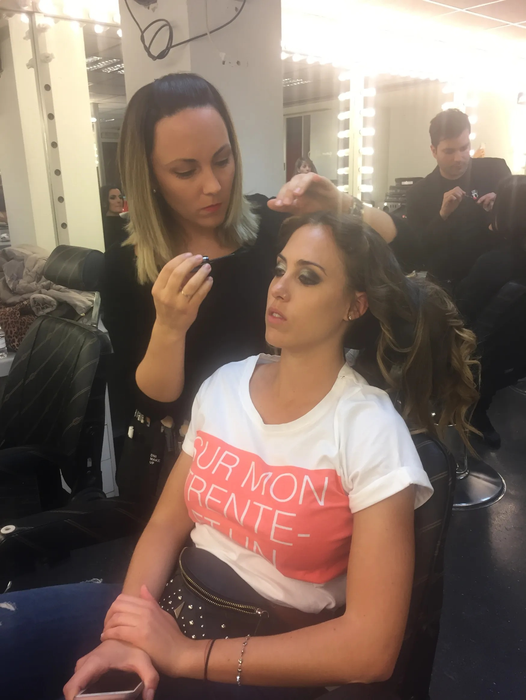
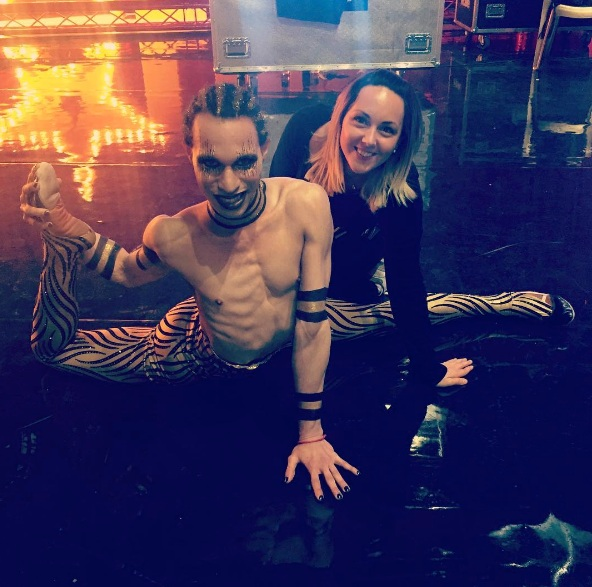
Entre los productos más utilizados destacaban MAC, Estée Lauder y una amplia selección de NYX, especialmente útiles para maquillajes de fantasía y caracterización.
Esta experiencia no solo supuso un crecimiento profesional, sino también personal. Trabajar en un entorno tan exigente y creativo reafirmó la pasión de Verónica por el maquillaje y consolidó su presencia en el sector audiovisual.